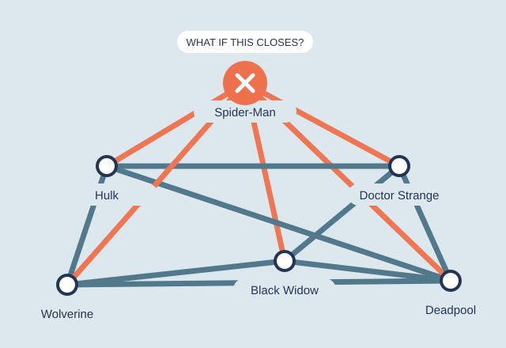

Loading the frozen snapshot…
Week 2 · Models & null models
One hero gone. Who loses their way?
Imagine Wikipedia as a transport map: articles are stations, and links are routes between them. If one station closes, can the others still reach each other? Try Spider-Man, then Hulk.
Each station represents a Wikipedia article. A route represents a link between articles, not a friendship between characters. The full dataset has 303 articles.

Choose a station to remove
We start with 277 articles that can all reach each other, following links in either direction. “Cut off” means losing the route to the largest group left after a removal. A rough guess is enough—or just reveal the answer.
Compared with chance
Is this more disruption than the link counts explain?
We rearranged the core’s links 1,000 times, keeping every article’s number of neighbours and each starting network connected. Then we removed the same article.
This tests a specific rewiring model. It is not the chance of a real-world failure or proof of why these links exist.
Inspect the shuffle distribution and methods
The comparison that matters
Same degrees. Different wiring.
The benchmark rewires the 277-station core while preserving each station’s degree. Each starting network must be connected. Then the same station is removed.
The 1,000 recorded draws are a degree-controlled benchmark, not a probability of real-world failure. “Stranded” means outside the largest remaining component.
What we found
A busy station is not always a vital connection.
Removing Spider-Man cuts five other articles off from the largest group. Removing Hulk cuts off none—even though Hulk has 65 neighbours. What matters is whether other routes remain, not just how many links a station has.
We also made 1,000 alternative maps. Each article kept the same number of neighbours, but we changed who connected to whom. Only nine of those maps lost at least five articles when Spider-Man was removed. Its particular connections matter.

THE TAKEAWAY
Count the alternative routes, not just the connections.
A station with many neighbours can still be easy to bypass. A less busy one can be the only way through. Comparing with rearranged maps helps us ask whether the pattern depends on the specific connections.
Curious? Go deeper.
Charts, data and methods for anyone who wants to check the details.
Explore the explanations & evidence
Another example: do linked articles form clusters?
When two articles both link to a third, do they also link to each other? Clustering measures how often these small triangles close. We compare the observed network with two ways of rearranging its links.
Clustering stays high after we hold degrees fixed. Its size alone is not the finding; its excess over a suitable baseline is.
Means from 1,000 draws per null. This full-network comparison is separate from the connected-core removal test above.
Inspect the full comparison →Could the result happen by chance?

As a shuffle test: Spider-Man strands 5 against a shuffle mean of 1.41, empirical p = 0.010; Black Widow strands 3 against 0.19, p = 0.001 — no rewired world managed more than 2. Doctor Strange’s 2 against 0.51 gives p = 0.086, and Hulk’s 0 against 0.58 is the most ordinary outcome there is (p = 1.0).
A z-score describes distance from the null mean in standard deviations; it does not require a normal distribution. These small, skewed counts are easier to interpret through their histograms and empirical tail probabilities. Normal-tail significance should not be inferred from their z-scores.
What else changes when we rearrange the links?
Twelve measurements against two null models
12 QUANTITIES · 2 NULLS · 1,000 DRAWS EACHA null model supplies a baseline. We compare the observed network with networks that preserve selected properties and randomize the rest.
We measured twelve quantities on the full 303-article snapshot and on 1,000 draws from each of two null models.
Null A · the degree-preserving shuffle
Take the real network and rewire A–B and C–D into A–D and C–B, 28,680 times over. Every article keeps its exact degree; who links to whom is scrambled. Spider-Man still has 106 links and the 17 isolates still have none — degree zero cannot gain a link this way.
Keeps the node count, edge count and every degree; randomizes the wiring subject to those constraints.
Null B · random G(n, m)
Throw the wiring away entirely: 303 nodes, 1,434 links, every link between a uniformly random pair. Degrees are redrawn by chance, so the hubs vanish and so do the isolates — with an average degree of 9.5, chance almost never leaves an article unlinked.
Keeps: n and m. Destroys: the degree sequence too.
![Six panels, each with two histograms of 1,000 null draws and a dashed line at the real value. Clustering: the real 0.307 sits far right of both nulls. The friendship paradox: the real 24.22 sits inside the shuffle distribution and far right of the random one. Chance the friend is at least as linked: the real 0.753 sits just left of the shuffle. Islands: the real 19 sits at the top edge of a shuffle distribution concentrated on 18, while the random null gives 1. Distances: the real 2.674 sits just right of the shuffle and left of the random null. Degree assortativity: the real minus 0.098 sits at the right edge of the shuffle distribution, while the random null centres on zero.](figures/null_survivors.svg)
The whole table
| Quantity | Real | Shuffle | z | p | G(n, m) | z |
|---|---|---|---|---|---|---|
| Average clustering C | 0.307 | 0.143 | +19.8 | 0.001 | 0.032 | +93.9 |
| Transitivity | 0.182 | 0.115 | +15.6 | 0.001 | 0.031 | +58.4 |
| Triangles | 1,839 | 1,158 | +15.6 | 0.001 | 142 | +142.8 |
| Islands (connected components) | 19 | 18.04 | +5.0 | 0.039 | 1.02 | +131.6 |
| Largest component | 277 | 285.9 | −23.3 | 0.001 | 303.0 | −190.2 |
| Average distance in the largest component | 2.674 | 2.631 | +2.9 | 0.005 | 2.778 | −24.0 |
| Degree assortativity | −0.098 | −0.120 | +2.0 | 0.024 | −0.008 | −3.5 |
| Mean degree at the end of a random link | 22.08 | 22.08 | — | — | 10.43 | +152.3 |
| Mean degree of a random character’s random friend | 24.22 | 24.19 | +0.1 | 0.469 | 10.44 | +168.5 |
| Chance your random friend is at least as linked | 0.753 | 0.763 | −3.5 | 0.001 | 0.635 | +30.7 |
| Characters no friend out-links | 2 | 1.26 | +1.3 | 0.205 | 16.68 | −5.1 |
| Biggest hub’s share of all link ends | 3.70% | 3.70% | — | — | 0.67% | +57.7 |
Two rows have no z and no p. The mean degree at the end of a random link is ⟨k²⟩/⟨k⟩, and the hub’s share is 106 / 2,868: both are functions of the degree sequence alone, so the degree-preserving shuffle reproduces them to every decimal place across all 1,000 draws. The standard deviation is exactly zero and a z-score would be a division by it. That is not a broken measurement — it is the null telling you the quantity carries no information beyond the degrees.
What changes under the shuffle
Some quantities change little under degree-preserving rewiring. Degree assortativity is −0.098 in the data versus a null mean of −0.120 (z = +2.0, empirical p = 0.024). The observed network is slightly less disassortative than this baseline. The result is exploratory: these one-sided p-values are unadjusted across twelve quantities.
Mean distance is 2.674 in the largest observed component versus 2.631 under the shuffle (z = +2.9, empirical p = 0.005). The difference is small but not zero. Short paths alone do not establish unusual wiring; the choice of baseline matters.
Clustering is 0.307 versus a shuffle mean of 0.143 (sd 0.008); no draw reached the observed value. The network has 1,839 triangles versus 1,158 on average under the shuffle. Links among characters from the same teams or eras are one possible explanation, not a mechanism established by this test.
The same number, two nulls, two conclusions
Clustering is about ten times the G(n, m) mean (0.032), but about 2.1 times the degree-preserving mean (0.143). Holding degrees fixed reduces the apparent excess without eliminating it. The two nulls answer different questions; G(n, m) does not control for hubs.
The observed 19 components compare with 18.04 under degree-preserving rewiring (p = 0.039) and about 1.02 under G(n, m) (z = +131.6). The shuffle retains the 17 isolates. The nine-character Morituri island is usually absorbed into the giant component: the largest component averages 285.9 nodes versus the observed 277 (z = −23.3). Treat the component-count p-value as exploratory.
Clustering, with its baseline
Average clustering is 0.307, compared with 0.143 (sd 0.008) in 1,000 degree-preserving shuffles. The observed value exceeds every draw (empirical p = 0.001 with the add-one correction). The degree sequence explains part of the difference from G(n, m), but an excess remains after controlling for degrees.
Why do your neighbours tend to have more links?
Why a random neighbour tends to have more links
THE FRIENDSHIP PARADOX · 286 LINKED ARTICLESPick a Marvel character with at least one link. On average they have 10.0 links. Now pick one of their friends at random: that friend has 24.2. Three times out of four (75.3%) the friend is at least as linked as the character you started from. Nobody is lying; picking a friend is degree-biased sampling, because a hub is a friend to many and therefore keeps getting picked.
For a uniformly selected linked article followed by one random neighbour, the observed mean is 24.22 versus a shuffle mean of 24.19 (z = +0.1, p = 0.47). This quantity can change with rewiring. The edge-sampled mean, ⟨k²⟩/⟨k⟩ = 22.08, is different: it depends only on degrees and is exactly preserved.
It does not need hubs to exist, only variance. Under random G(n, m), where the biggest article has around 19 links, the paradox weakens but refuses to die: 10.44 for a random friend against 9.47 for a random character. A Poisson distribution still has a variance, and a variance is all the paradox asks for.
The two characters nobody out-links
The paradox has an edge case worth chasing: is there anyone whose friends are never better connected than they are? Across all 286 linked articles, exactly two.
Spider-Man is the largest hub, with 106 links. Radian has six links on the nine-character Morituri island, where no neighbour has more. Both are local degree maxima, despite their very different degrees.
The shuffle produces 1.26 local maxima on average versus the observed two (z = +1.3, p = 0.205). G(n, m) gives 16.7 on average. These comparisons do not establish that the observed pair is exceptional.
Which articles were already separate?
MARVEL TRANSIT AUTHORITY / SERVICE BOARD
Explore the 16-station interchange map
The interchange map
16 HUBS · SCHEMATIC · UNDIRECTEDThis is a readable overview of the 16 biggest interchanges. Select a line to follow its actual links. The full journey planner below includes every article.
Positions are not geography. Line colours are drawing aids, not detected communities. The map intentionally omits smaller stations; no full-network conclusion is inferred from this overview.
Plan a route through all 303 articles
Where would you like to go?
FULL 303-ARTICLE PLANNERThe planner respects the active closure after its result is revealed. Restore service to compare. It uses breadth-first search; every hop is a real link in the selected graph.
What can this dataset tell us?
What the data means
303 article entries and 1,784 directed links from the course’s frozen 26 August 2026 snapshot. A link means one article links to another within this roster. It does not measure friendship, hero strength, popularity or the whole Marvel universe.
Download the snapshot and metrics (JSON)Limits of the experiment
Only within-roster links are observed. Closing a station means deleting an article node, not predicting a real outage. The route drawn is one shortest path, not necessarily the only one. The benchmark holds degrees fixed but changes other structure.
Technical methods & code
Closures operate on the simple undirected 277-node, 1,421-edge main component. After one closure, 276 nodes remain. All four displayed results are recomputed in-browser. The recorded benchmark has 1,000 connected degree-preserving rewires per tested article; each accepts 20 swaps per edge, with a separate 50-swaps-per-edge sensitivity run. The 16-hub drawing uses an edge-disjoint greedy path decomposition. Route finding includes all 303 nodes and explicitly selects directed or undirected travel.
The twelve-quantity shuffle test is a separate run on a wider
graph: the whole 303-article snapshot as simple undirected links,
and deliberately not conditioned on connectedness, which
is what lets the number of islands vary under the null. 1,000
draws per null, 20 successful swaps per link for the
degree-preserving one and
gnm_random_graph(303, 1434) for the random one. Every
draw asserts that the degree sequence is unchanged before it is
measured. Empirical tails are (1 + draws at least as extreme) / (1
+ draws), one-sided and unadjusted across the twelve quantities,
so treat any single p near 0.05 as a hint rather than a result. A
finite swap chain approximates the null ensemble rather than
sampling it uniformly.
Analysis and source code on GitHub. All experiments run locally in your browser; the frozen data is never edited.
AI use and authorship
Built with AI assistance for interface design, programming, explanation drafts and test construction. Metrics come from the provided snapshot and reproducible analysis; the games and metaphors are authored presentation choices. Numerical checks compare independent Python and browser implementations. The free-play tools are not course hand-ins.